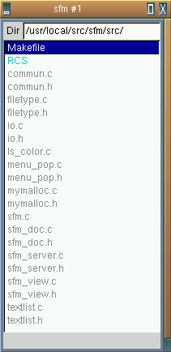
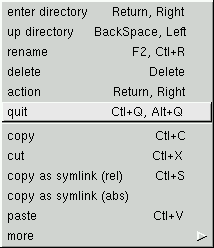
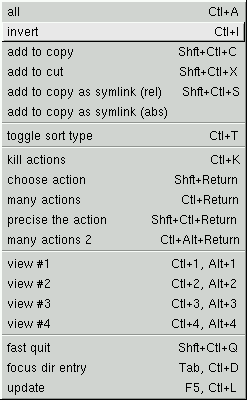

![[ TABLE OF CONTENTS ]](../gx/indexnew.gif)
![[ FRONT PAGE ]](../gx/homenew.gif)


As the GTK GUI programming toolkit matures more developers have been inspired to use it for the visual presentation of their programs. Pascal Rigaux, a French programmer, has come up with a small file-manager he calls sfm. Sfm isn't quite as simple as the name and initial appearance imply; it has a remarkably full feature-set for such a small program.
There has been a long succession of X Windows file-managers which use various icons to represent different types of files. This approach can be useful for people accustomed to a Macintosh or Windows environment, where this type of file-manager is common. These icons do have drawbacks, though, as fewer files will fit into a single display window which results in much more scrolling to find a particular file. The impact on system resources is considerable as well, as the X server is called upon to constantly update the display, and memory usage is much greater than what is needed by a text-based manager. In the end it's just a matter of preference.
Sfm is unusual in that it is an X-only file-manager which is also text-based (FileRunner is another). It also goes against the general trend towards mouse-based applications in that the keyboard interface is well-developed.
The default window size is rather small; my first impression was that this
was a trivial application, probably a first GTK programming exercise without
much utility. As I explored further (and actually read the README file!) I
found that sfm's uncluttered appearance conceals an interesting and useful
approach to the perpetual effort to contrive a useful interface to the
ls utility. In the screenshot below I've enlarged the default window
by about one-third:

The above window is rather plain. The interesting part is the
right-mouse-button menu which offers a plethora of actions which can be
performed upon the highlighted file, along with a submenu offering less-used
possibilities. I wanted a screenshot showing the basic sfm window with both
menus fanned out from it. I don't know whether it is an idiosyncrasy of sfm,
GTK, or xv (which I used for the screenshots), but while I was able to get
shots of either menu by itself, I couldn't get them all in one screenshot. So
here are the main menu and its submenu; try to imagine them connected to the
first screenshot above:

This is the submenu stemming from the "more" item:

As you can see, the keyboard shortcuts for all of the various menu-items are shown to the right of the action menu-entries. This is a great help in learning the key-bindings, which are designed to be intuitive and similar to those of many other programs. I especially like the Lynx-style left-and-right arrow-key directory navigation (the mc file-manager offers this as an option).
Multiple sfm windows can be opened at once and files can be easily copied or moved between them.
Sfm uses a configuration dot-file (~/.sfm) in order to determine the action to take upon a highlighted file when either the enter key, the right-arrow-key, or a single left-mouse-button click is received. Surprisingly, this is one dot-file you won't have to edit, as it is auto-generated. The first time you select, as an example, a text file, a dialog box pops up asking what action you'd like to take, such as editing it with your favorite editor. That preference is then recorded in the ~/.sfm file; the next time a text file is selected it will be loaded into your editor. Sfm uses the standard Linux file utility to determine file-types. This is quite a nice feature, especially for new Linux users who have enough to do just becoming comfortable with the system without constantly needing to chase down and edit config files.
Sfm is still in its early days, but judging by the intelligent design of the current version, it's likely that further improvements are in the offing. The current version (1.4 as I write this) is available from the Sunsite archive; an alternate site is here.